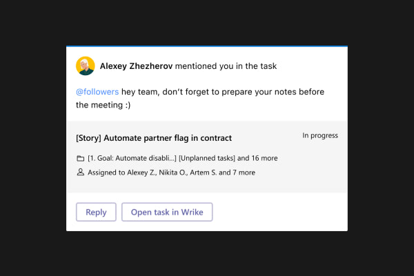

<!DOCTYPE html(prefix="og: http://ogp.me/ns#")>
<html>
  <head>
    <meta charset="utf-8"/>
    <meta name="viewport" content="width=device-width, initial-scale=1.0"/>
    <meta property="og:type" content=""/>
    <meta property="og:title" content="Артём Самсонов • Продуктовый дизайнер"/>
    <meta property="og:description" content="Продуктовый дизайнер из Петербурга"/>
    <meta property="og:image" content="http://artemsamsonov.com/img/default.jpg"/>
    <link href="https://fonts.googleapis.com/icon?family=Material+Icons" rel="stylesheet"/>
    <link rel="stylesheet"/><!-- Yandex.Metrika counter --> <script type="text/javascript" > (function(m,e,t,r,i,k,a){m[i]=m[i]||function(){(m[i].a=m[i].a||[]).push(arguments)}; m[i].l=1*new Date();k=e.createElement(t),a=e.getElementsByTagName(t)[0],k.async=1,k.src=r,a.parentNode.insertBefore(k,a)}) (window, document, "script", "https://mc.yandex.ru/metrika/tag.js", "ym"); ym(88097279, "init", { clickmap:true, trackLinks:true, accurateTrackBounce:true, webvisor:true }); </script> <noscript><div></div></noscript> <!-- /Yandex.Metrika counter -->
    <title>Артём Самсонов • Продуктовый дизайнер</title>
  <link href="./css/style.bundle.css" rel="stylesheet"></head>
</html>
<body class="body_dark">
  <header class="header header_dark">
    <div class="header__logo"><a href="index.html">Артём Самсонов</a></div>
  </header>
  <div id="index">
    <div id="main-info">
      <div class="main-info" id="main-info-text">Продуктовый дизайнер из Петербурга. Больше десяти лет я проектирую цифровые enterprise-продукты и помогаю выводить их на новый уровень</div>
      <div id="main-info-pic"></div>
    </div>
    <div id="skills">
      <div class="list-header">
        <h2>Я готов:</h2>
      </div>
      <div class="skill-card">
        <div class="skill-card__name">Сделать ваш интерфейс консистентным</div>
        <div class="skill-card__description">Я работаю с дизайн-системами больше трёх лет. Полтора года я улучшал большую и многоуровневую дизайн-систему в компании Wrike</div>
        <div class="skill-card__digit">01</div>
      </div>
      <div class="skill-card">
        <div class="skill-card__name">Сфокусироваться на проблемах юзеров</div>
        <div class="skill-card__description">В Wrike я проводил интервью и юзабилити-тесты совместно с UX-ресёрчерами и проджект-менеджерами</div>
        <div class="skill-card__digit">02</div>
      </div>
      <div class="skill-card">
        <div class="skill-card__name">Улучшить дизайн-процессы</div>
        <div class="skill-card__description">Больше полутора лет я работал в большой интернациональной команде дизайнеров. Вместе мы научились взаимодействовать друг с другом и организовывать кросс-командные инициативы</div>
        <div class="skill-card__digit">03</div>
      </div>
      <div class="skill-card">
        <div class="skill-card__name">Найти общий язык с разработчиками</div>
        <div class="skill-card__description">В компании PropellerAds я учил JavaScript и React, пробовал сблизить дизайн и разработку, создавая быстрые прототипы</div>
        <div class="skill-card__digit">04</div>
      </div>
    </div>
    <div id="cases">
      <div class="list-header">
        <h2>Портфолио</h2>
      </div>
      <div class="cases__content"><a class="case-card" href="msteams-rebuild.html">
          <div class="case-card__cover"></div>
          <div class="case-card__headline">
            <h3>Как перестать блуждать ёжиком в тумане и улучшать продукт разумно</h3>
          </div>
          <div class="case-card__description">Рассказываю на примере интеграции Wrike for MS Teams, как перестать делать лишнюю работу и реально помогать пользователям</div>
          <div class="case-card__button"></div></a><a class="case-card" href="msteams-notifications.html">
          <div class="case-card__cover"></div>
          <div class="case-card__headline">
            <h3>Как мы проектировали уведомления из Wrike в MS Teams</h3>
          </div>
          <div class="case-card__description">Рассказываю о проблемах, с которыми мы столкнулись в процессе проектирования и как мы решали их с помощью пользователей</div>
          <div class="case-card__button"></div></a><a class="case-card" href="calendar-from-hell.html">
          <div class="case-card__cover"></div>
          <div class="case-card__headline">
            <h3>Почему дизайнерам компонентов нужно доплачивать за вредность</h3>
          </div>
          <div class="case-card__description">Рассказываю на примере компонента «Календарь», как типичная на первый взгляд задача способна довести продуктового дизайнера до слёз</div>
          <div class="case-card__button"></div></a>
        <!--+caseCard('case-01', 'Дизайн-хакатон: домашняя страница сервиса Wrike', 'Краткая презентация того, как я визуализировал минималистичный концепт домашнего экрана', 'hakaton.html')-->
      </div>
    </div>
  </div>
<script type="text/javascript" src="./js/bundle.js"></script></body>